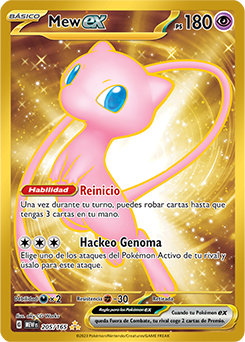
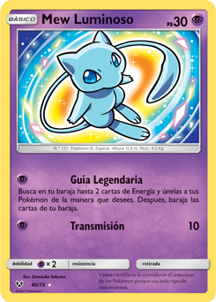

Número de Pokédex: #151


¡Bienvenido a tu pokedex de Kanto!
volver al inicio
Número de Pokédex: #151


TIPO: Psíquico
Mew es un Pokémon mítico de tipo psíquico introducido en la primera generación, conocido por ser el ancestro de todos los Pokémon al contener en su ADN los genes de todas las especies existentes. Con una altura de 0,4 m y un peso de 4,0 kg, su color es rosado y posee una apariencia felina derivada del gato esfinge, con un pelaje tan fino que solo es visible al microscopio.